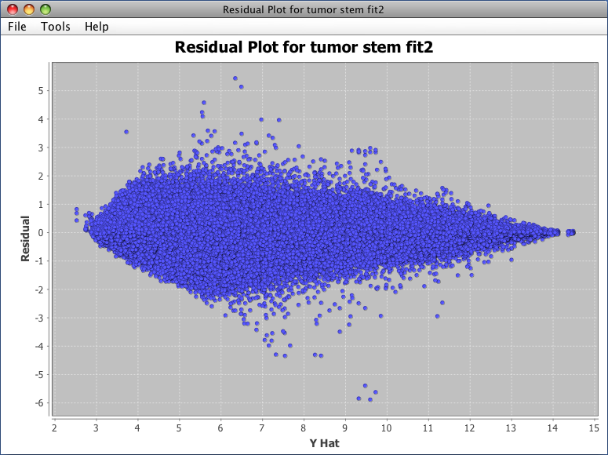

After fitting a model you can create a scatter plot of the residuals against the estimated values (Y Hat). You can open this graph by right-clicking a fit node in your project's data tree and selecting Show Residual Plot or by selecting one of the Analysis->Plot Residuals vs. Estimates->... menu items from J/maanova's main menu.

Example Residual Plot
After creating the graph you can mouse over any of the data points to see a popup window containing more detailed information. See the general graph settings for help on saving graph images, zooming in and out and changing graph labels.